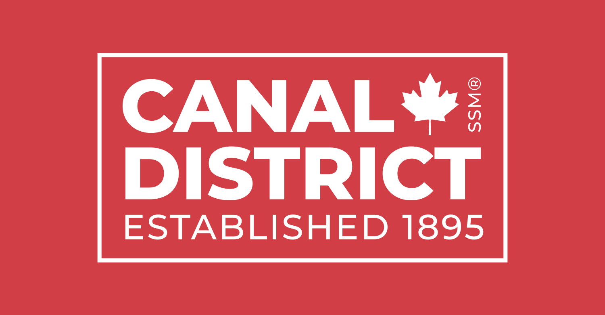
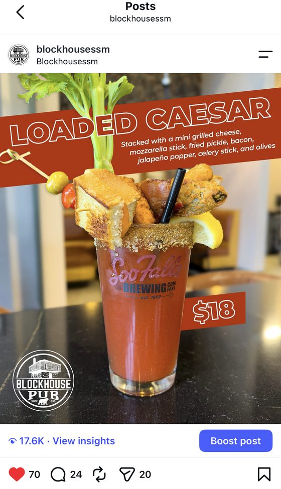
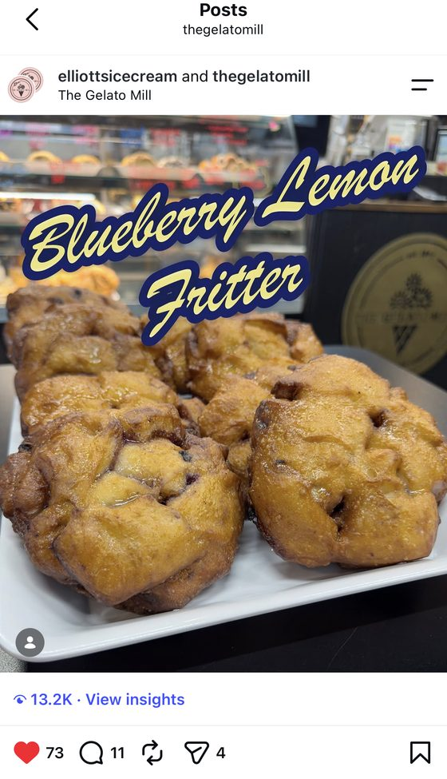

03 · Brand Systems, Campaign Design & Production
Ongoing brand, social, and production work across seven connected hospitality and entertainment venues in Sault Ste. Marie. One in-house designer running the system end to end, from a weekly post to a highway billboard.
Role
In-house Graphic Designer & Brand Lead
Timeline
May 2024 – March 2026
Disciplines
Brand Systems, Social & Data, Menu & Print, Out-of-home, Merchandise, Signage, Motion

Across seven venues
01 · Selected Work
Each venue keeps its own personality while reading as one place. The same hands move from social and menus to out-of-home, merchandise, and production. Click any piece to see it full size.
Print & Campaign
Full-page district ad
One layout pulling all seven venues under a single system.
Out-of-home
City transit ad
Wide-format advertising built for the street.
Environmental & Production
The Gelato Mill cart wrap
Measured, designed, and produced end to end, from quote and PO to install.
Wayfinding & Signage
Interior & exterior navigation signs
Measured on site, drawn to spec, and coordinated through print production.
Menu & Print
Seasonal specials menu
One layout, refreshed and printed for the table.
Merchandise & Production
Staff shirts across venues
One template, each venue keeping its own mark.
Social Content
The Boiler Room, Comfort Trio
Designed and photographed in house.
02 · Social, Measured
Top-performing posts reached between 10,000 and 17,000 views each, designed and photographed in house.
Ongoing content across every venue account, built as repeatable systems that hold quality against a fast calendar of launches, weekly specials, and events.


03 · Original Identity & Motion
One place in this project where the identity itself, not just its application, is original work: a logo and a produced television spot built from the ground up.
04 · Part of the Same Property
Soo Falls Brewing Co. is part of the same property. Its brand identity, packaging, and social presence were built from the ground up, and it has its own full case study.
View the Soo Falls case studyLooking for a visual designer, or have a project in mind? I'd love to hear from you.
Get in touch